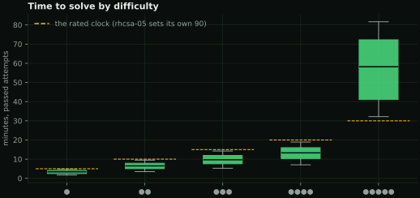
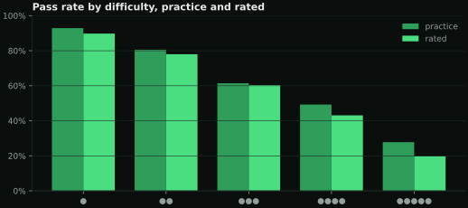
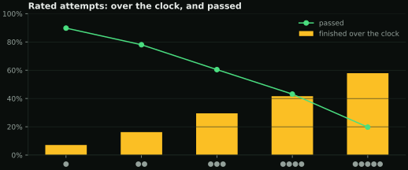
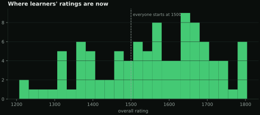
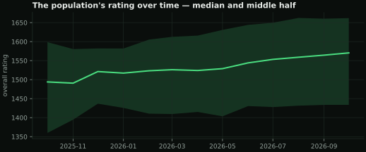
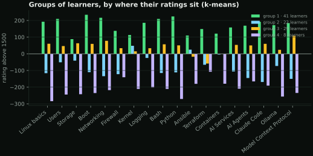
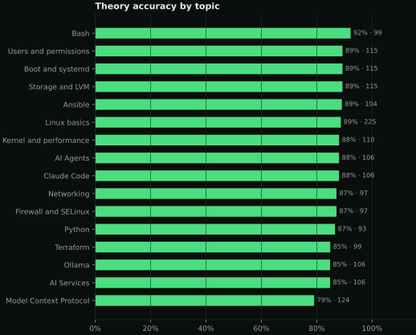
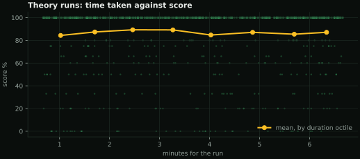
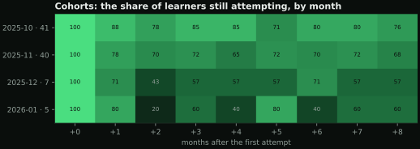

Pass rates, time to solve, ratings, theory, cohorts and how the material hangs together — computed from the attempts table with pandas, scikit-learn and networkx, drawn by matplotlib in this site's colours. No model, no sampling: every number here can be recomputed with the SQL it implies.
Sample data. These charts are drawn from the 100 generated learners and 6431 attempts behind the ratings pages, replayed through the real rating code. On the server a nightly job redraws them from the database.

Passed attempts take a median of 3 min at difficulty one and 58 min at five. The dashed line is the clock a rated attempt runs against; boxes are the middle half, whiskers the rest without outliers.


Rated attempts finish over their clock 26% of the time — the fix may be right, and it still counts as a loss.



The median overall rating is 1570, with a spread of 150. Clustering each learner's nineteen topic ratings (k-means, standardised) finds 4 groups: not better and worse, but what each group is better and worse at.

Accuracy is lowest in Model Context Protocol and highest in Bash. Taking longer over a run barely changes the score — the correlation between minutes and score is +0.01.


Each row is the learners whose first attempt fell in that month (with how many there were); each cell, the share still attempting that many months later. On average 69% are still at it in their third month. Months that have not happened yet are blank, and cohorts smaller than five are left out.
Point at a node: its own connections light up.
journal · lab · questions · topic · grey edges are declared topics, green ones textual similarity
141 nodes: the nineteen topics, every lab, every question bank and the topic journals. Grey edges are the topics each one declares; green edges are the 248 strongest textual similarities (TF-IDF, cosine ≥ 0.12, three neighbours each). Users and permissions is the most connected topic.
No embeddings and no vector database: an edge exists because two documents share the terms that matter, which is also why it can be explained.
These need opt-in telemetry the TUI does not send yet, so there is no chart rather than a made-up one: